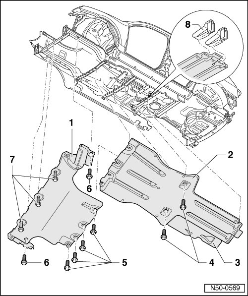

Noise Insulation Panel Assembly Overview
Underbody Impact Guard
Noise Insulation Panel Assembly Overview
• Slight changes may have to be made to removal and installation procedures, depending upon engine installed in vehicle.

1 Front noise insulation
2 Rear noise insulation
3 Shielding piece
• Riveted on to rear noise insulation.
4 Bolt
• Quantity: 2
• 8 Nm
5 Bolt
• Connects front and rear noise insulation.
• Quantity: 4
• 8 Nm
6 Bolt
• Quantity: 2
• 8 Nm
7 Bolt
• Quantity: 3
• 8 Nm
8 Bracket
• Noise insulation is slid into spring tabs at rear.
• Quantity: 2